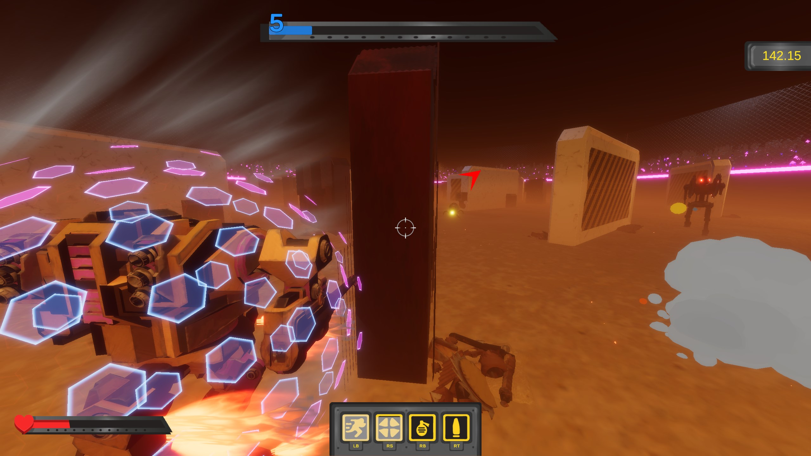

BoB - Battle of Bots
Unity
C#
Battle of Bots is a Third-Person-Shooter game where the player has to survive as long as he can against endless enemy waves. The game originated at the game jam "GDW Trier" and is now still under development.
More Details...